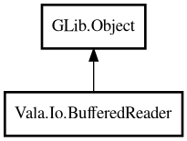

BufferedReader
Object Hierarchy:

Description:
public class BufferedReader : Object
BufferedReader provides buffered character-input-stream reading. It wraps a GLib.DataInputStream and offers convenient line-by-line or
full-text reading similar to Java's BufferedReader and Go's bufio.Scanner.
Example:
var reader = BufferedReader.fromFile (new Path ("/tmp/file.txt"));
string? line;
while ((line = reader.readLine ()) != null) {
print ("%s\n", line);
}
reader.close ();
Content:
Static methods:
Methods:
- public void close ()
Closes the underlying stream. After closing, all read operations
return null or '\0'.
- public bool hasNext ()
Returns whether there is at least one more line to read. This performs
a look-ahead read; the peeked line is returned by the next call to readLine().
- public string? readAll ()
Reads the entire remaining stream as a single string.
- public char readChar ()
Reads a single byte from the stream as a character. Returns the null
character (0) at end of stream.
- public string? readLine ()
Reads a single line from the stream. Returns null at end of stream or
if the reader has been closed.
Inherited Members:
All known members inherited from class GLib.Object
- @get
- @new
- @ref
- @set
- add_toggle_ref
- add_weak_pointer
- bind_property
- connect
- constructed
- disconnect
- dispose
- dup_data
- dup_qdata
- force_floating
- freeze_notify
- get_class
- get_data
- get_property
- get_qdata
- get_type
- getv
- interface_find_property
- interface_install_property
- interface_list_properties
- is_floating
- new_valist
- new_with_properties
- newv
- notify
- notify_property
- ref_count
- ref_sink
- remove_toggle_ref
- remove_weak_pointer
- replace_data
- replace_qdata
- set_data
- set_data_full
- set_property
- set_qdata
- set_qdata_full
- set_valist
- setv
- steal_data
- steal_qdata
- thaw_notify
- unref
- watch_closure
- weak_ref
- weak_unref